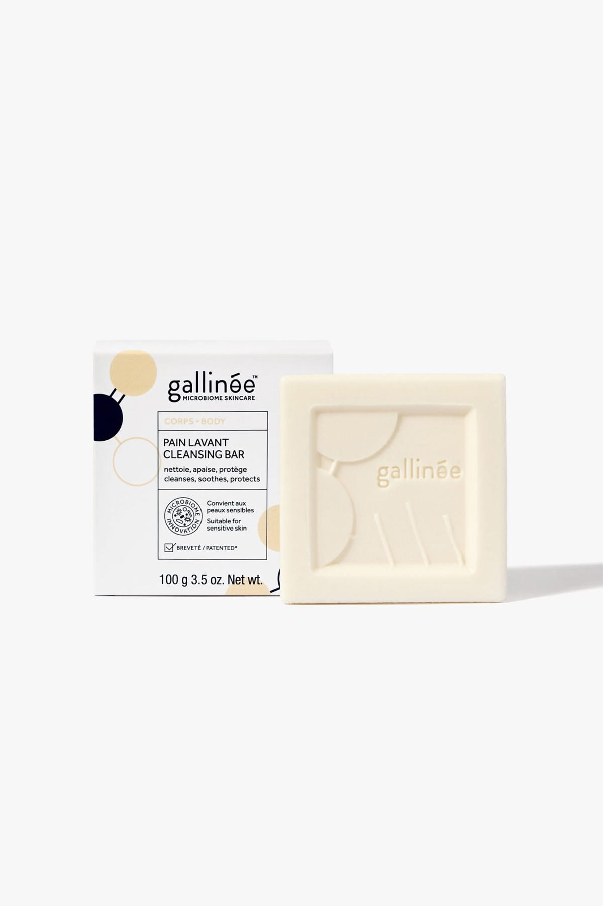
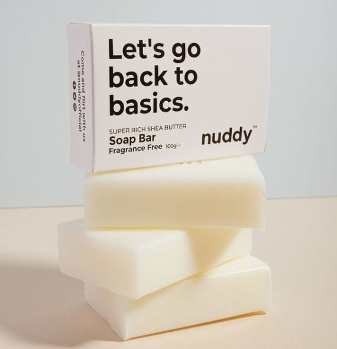
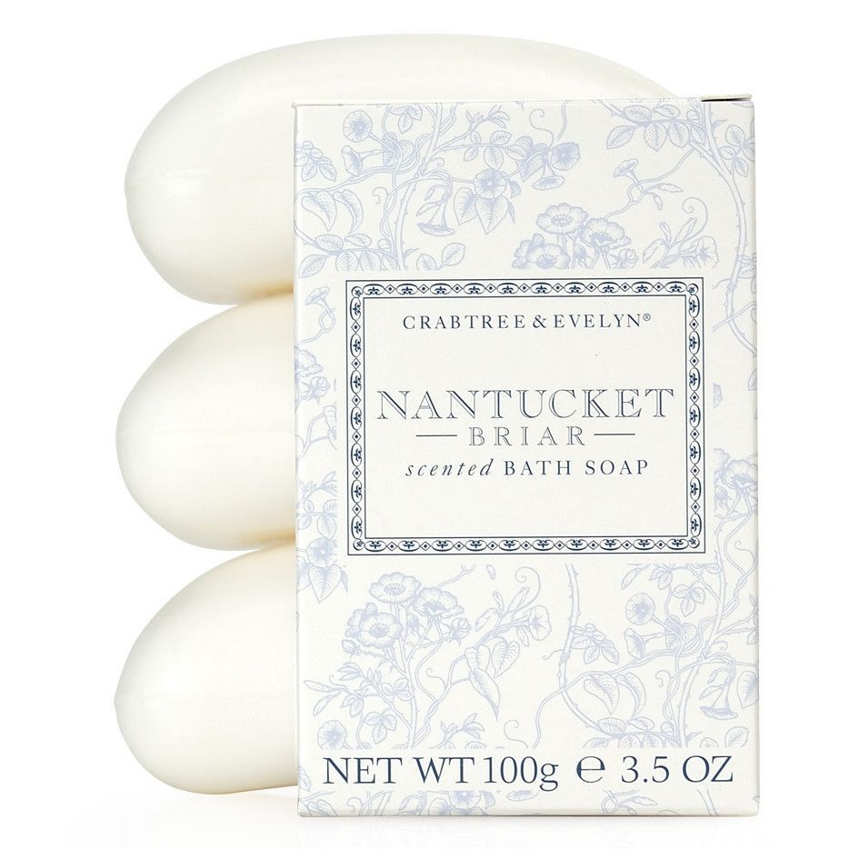
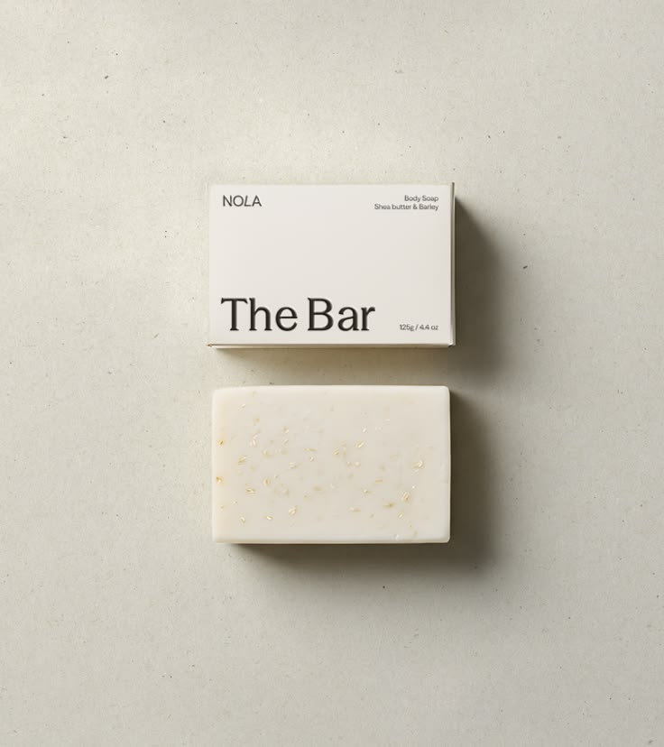
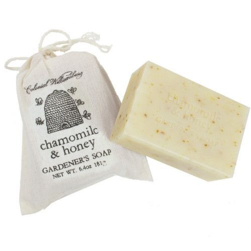

GALLINÉE
Cleansing Bar
Face & body cleanser
100g / 3.5 oz
A soap-free cleansing bar with prebiotics and lactic acid, formulated at pH 5.5.
Discover the bar
THE WHITE SOAP EDIT / 01
White, ivory, cream. A collection of simple objects for the everyday ritual of getting clean.
nuddy · Fragrance Free Soap Bar · 100g
Explore the collection
GALLINÉE
Face & body cleanser
100g / 3.5 oz
A soap-free cleansing bar with prebiotics and lactic acid, formulated at pH 5.5.
Discover the bar
CRABTREE & EVELYN
Scented bath soap
100g / 3.5 oz per bar
Smooth oval bars paired with delicate botanical packaging in pale blue and white.
Discover the bar
NOLA
Body soap · Shea butter & barley
125g / 4.4 oz
A cream-coloured rectangular bar, with shea butter and barley named on the packaging.
Discover the bar
COLONIAL WILLIAMSBURG
Gardener’s soap
6.4 oz / approximately 181g
A triple-milled vegetable soap with a garden-inspired scent, wrapped in a little cloth sack.
Discover the barA NOTE ON THE COLLECTION
This collection brings together white and cream-coloured bars through their shapes, textures and packaging. From a clean square to a soft oval, each one makes an everyday object worth looking at a little longer.
A 100g shea butter soap bar. The retailer describes it as fragrance free, vegan friendly and made in the UK.
Product informationA solid, soap-free cleanser for face and body. Gallinée describes a pH 5.5 formula with prebiotics and lactic acid. The pictured package is the standard Cleansing Bar; it is not labelled as the separate Perfume-Free version.
Brand informationThe supplied image identifies this as Nantucket Briar Scented Bath Soap, 100g / 3.5 oz. This page focuses on the photographed bar and packaging; its current formula and availability have not been verified.
Retailer referenceThe supplied packaging reads “Body Soap”, “Shea butter & Barley” and “125g / 4.4 oz”. A matching official product page has not been located; further ingredients, fragrance and product claims are unverified.
Brand informationThe official shop describes a triple-milled vegetable soap with botanical butters, oils and extracts, made in the USA and presented in a cloth sack. The listed bar size is 6.4 oz.
Official product information